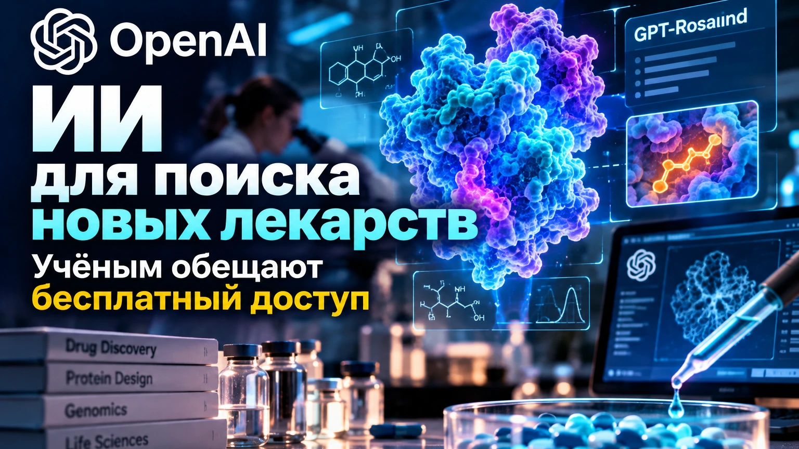

Новости ИИ
Новые модели, исследования, продукты и события индустрии искусственного интеллекта.
20 октября 2026

Mercury 3: нейросеть, которая пишет быстрее, чем успеваешь читать
Компания Inception выпустила Mercury 3 — языковую модель с необычной архитектурой. Большинство современных языковых моделей формируют ответ последовательно, слово за словом. Mercury использует диффузионный подход, позволяющий генерировать части текста параллельно. Разработчик

FLUX 3 Max: десять секунд видео за двенадцать секунд
Black Forest Labs и fal представили FLUX 3 Max — новую модель генерации видео. По опубликованным результатам испытаний, модель создаёт десятисекундный ролик примерно за 11–12 секунд. Для сравнения: Seedance 2.5 в аналогичном тесте потребовалось около 278 секунд при сопоставимой

Amazon упрощает запуск ИИ на собственных процессорах вместо NVIDIA
Amazon представила TorchNeuron — инструмент, позволяющий запускать программы для машинного обучения на процессорах AWS Trainium без существенной переделки существующего кода PyTorch. Раньше перенос моделей между разными аппаратными платформами мог требовать серьёзной переработки

США запретили DeepSeek в гражданских федеральных ведомствах
Министерство внутренней безопасности США выпустило распоряжение об удалении продуктов DeepSeek из информационных систем федеральных гражданских ведомств. Ограничения затрагивают также сторонние продукты, использующие реализации DeepSeek.

MiniMax выпустила ИИ в три раза быстрее и на 70% дешевле
MiniMax представила M3.1 Flash — новую модель для программирования, автоматизации и работы ИИ-агентов. Компания заявляет, что модель почти втрое быстрее предшественницы, а выполнение агентных задач обходится на 70% дешевле. Скорость генерации достигает 200 токенов в секунду,
19 октября 2026

Anthropic направит 5% своих акций на общественные проекты
Anthropic объявила о создании Anthropic Public Benefit Fund — специального фонда, которому планирует передать 5% акций компании. Решение ещё должно получить одобрение акционеров. В дальнейшем доля фонда может увеличиваться: совет директоров сможет добавлять ещё 2% акций при

Anthropic: ИИ-агенты работают в шесть раз больше, чем сотрудники
Anthropic опубликовала исследование о том, как искусственный интеллект меняет работу внутри самой компании. Исследователи проанализировали внутреннюю статистику, данные о найме, использовании ИИ, производительности и интервью с сотрудниками. Выяснилось, что к августу 2026 года

NVIDIA выпустила ноутбуки для запуска мощного ИИ без облака
NVIDIA объявила о начале продаж ноутбуков на новой платформе RTX Spark. Первые устройства выпускают ASUS, Dell, HP, Lenovo, Microsoft и MSI. Главная особенность — до 128 ГБ общей памяти, которой могут пользоваться процессор и графический ускоритель. Это позволяет запускать
DeepSeek открыла собственный поисковый API
Одновременно с обновлением модели DeepSeek предоставила разработчикам доступ к собственному поисковому движку. Новые интерфейсы Search и Fetch позволяют программам искать информацию в интернете и получать содержимое найденных страниц. По заявлению компании, её поисковая система

DeepSeek обновила свою открытую модель: лучше пишет код и быстрее выполняет задачи
DeepSeek выпустила DeepSeek-V4.1-Flash-1017 — обновлённую версию своей мультимодальной модели. Компания называет обновление небольшим, но результаты собственных испытаний показывают заметные улучшения. Например, показатель Terminal-Bench 4.0 вырос с 31,2 до 42,3, а DeepSWE v1.1

GPT-6 Pro научился распределять задачи между несколькими ИИ-агентами
OpenAI обновила GPT-6 Pro в обычном чате ChatGPT. Главное изменение — модель теперь может поручать разные части сложной задачи нескольким ИИ-агентам, которые работают одновременно. Пользователь может наблюдать за ходом их работы и открывать результаты отдельных заданий. Компания
Google делает ссылки в ответах ИИ заметнее. А что, так можно было?
Google обновляет AI Mode и AI Overviews: ссылки внутри ответов станут заметнее, а новостные материалы получат более выразительные блоки. Но сколько переходов это принесёт сайтам — пока неизвестно.
17 октября 2026

GitHub запустил ИИ-проверку безопасности программного кода
GitHub объявил о полноценном запуске AI Scan — инструмента, который проверяет изменения программного кода на потенциальные уязвимости. В отличие от традиционного анализатора CodeQL, новая система охватывает дополнительные языки и технологии, включая PHP, Bash, Terraform и

OpenAI разрешила создавать собственные голоса простым текстовым описанием
OpenAI добавила в GPT-Live функцию prompt-to-voice. Теперь разработчик может описать нужный голос словами: возрастное звучание, тембр, акцент, высоту, скорость речи и манеру произношения. Например, можно попросить спокойный низкий женский голос с лёгкой хрипотцой или

Krea 3 обещает редактировать изображения за 8 секунд
Krea представила новую модель Krea 3, ориентированную на быстрое и точное редактирование изображений.

Kling 4.0 научилась создавать 30-секундные видео с управлением по ключевым кадрам
Kuaishou выпустила новую видеомодель Kling 4.0. Главные изменения — генерация роликов продолжительностью до 30 секунд за один проход, поддержка до 15 референсов и управление сценой с помощью десяти ключевых кадров. Можно использовать изображения персонажей, раскадровки,
Китай предложил ограничить экспорт передовых технологий ИИ
Министерство коммерции Китая опубликовало проект обновления списка технологий, экспорт которых предлагается запретить или

Американская Reflection открыла доступ к параметрам огромной модели Beam
Reflection AI опубликовала параметры своей модели Beam на Hugging
16 октября 2026

OpenAI создала ИИ для поиска новых лекарств. Учёным обещают бесплатный доступ
OpenAI представила Rosalind Academic Plan. Программа позволяет университетским лабораториям получить доступ к GPT-Rosalind — специализированной модели для исследований в биологии, генетике и разработке

NVIDIA выпустила новую ИИ-модель, которая умеет понимать изображения и документы
NVIDIA представила Nemotron 3.5 Super VL — открытую модель на 120 миллиардов